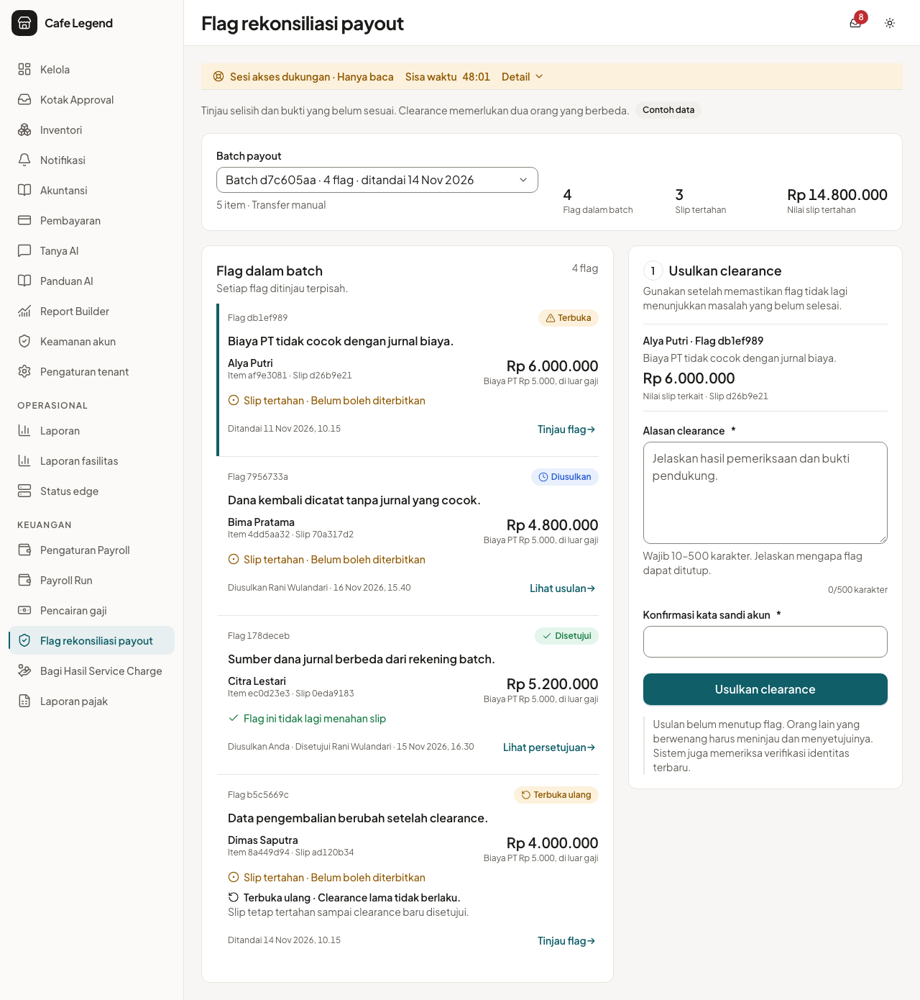
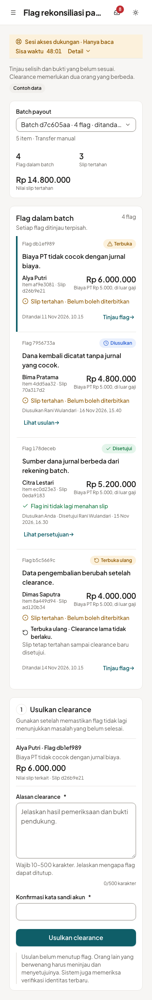
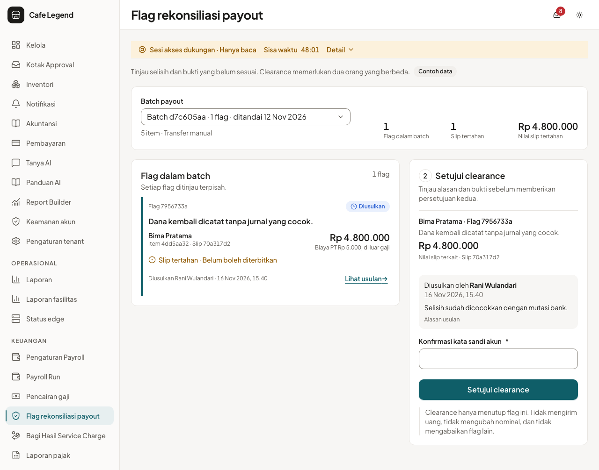
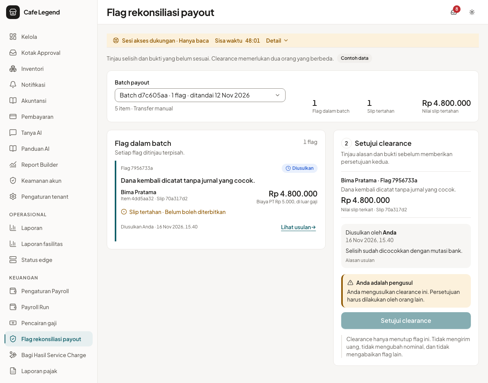
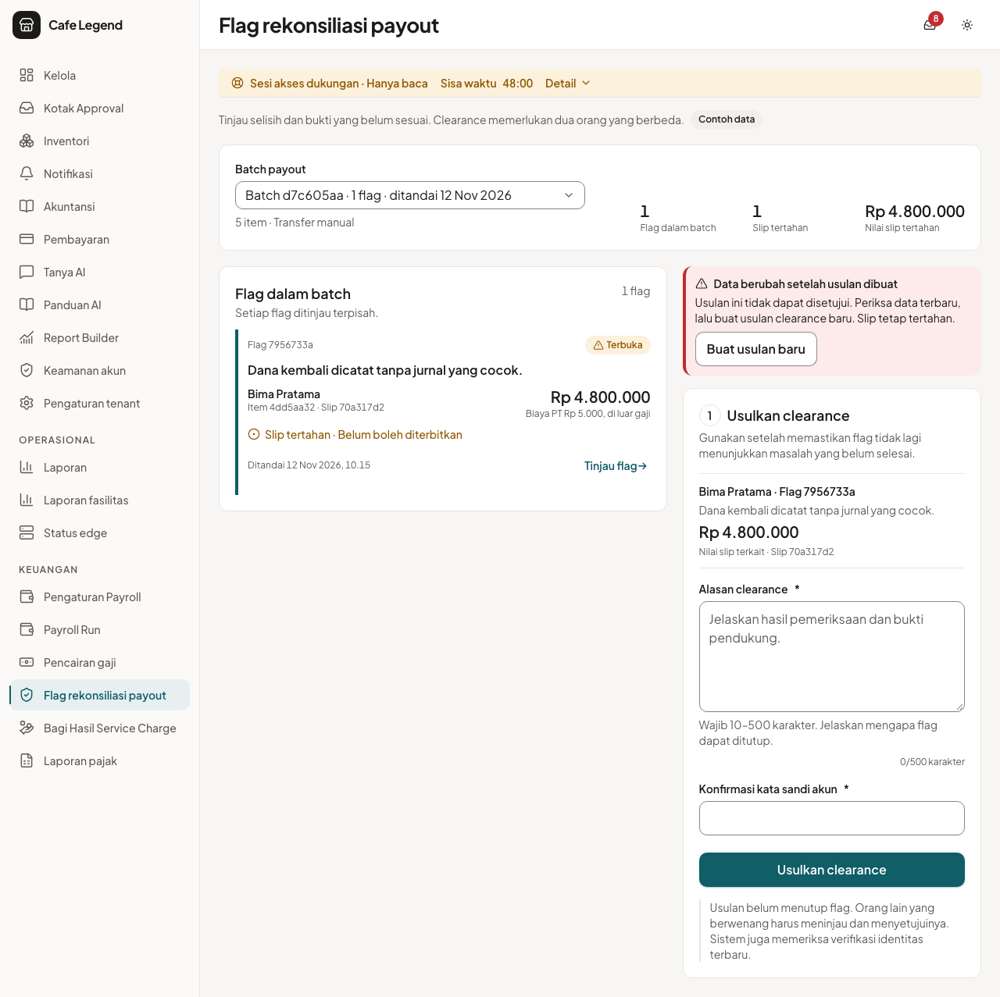
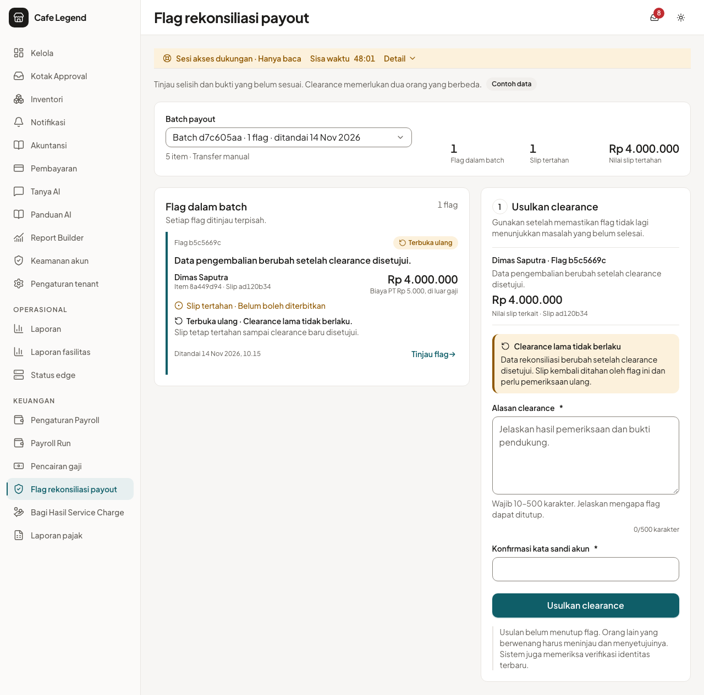
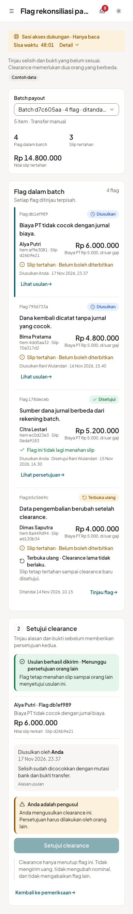
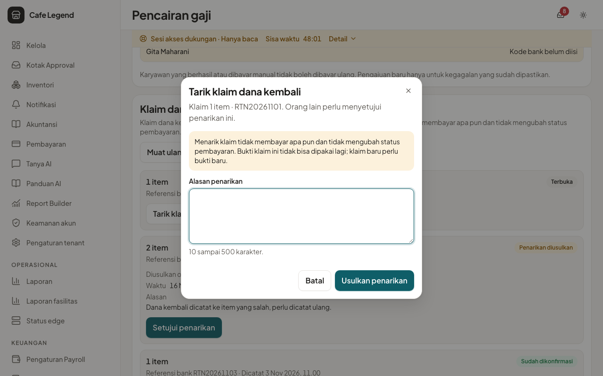
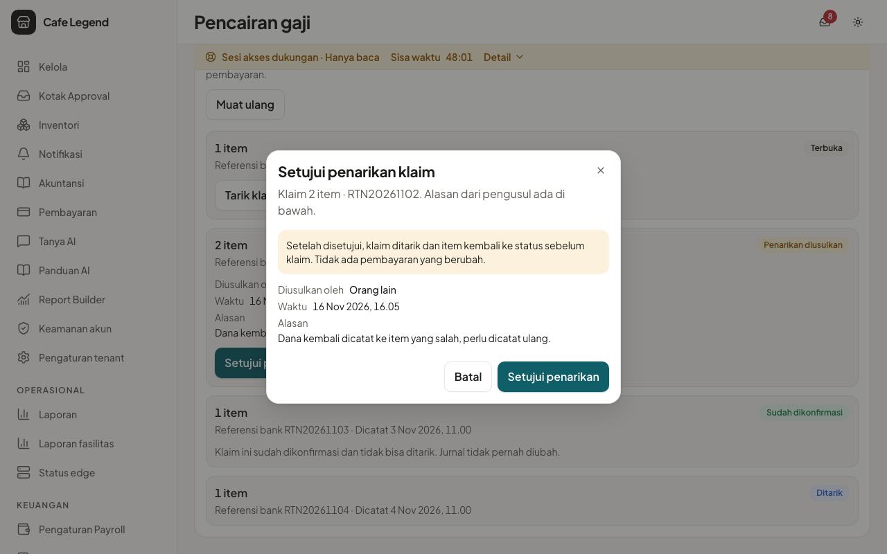
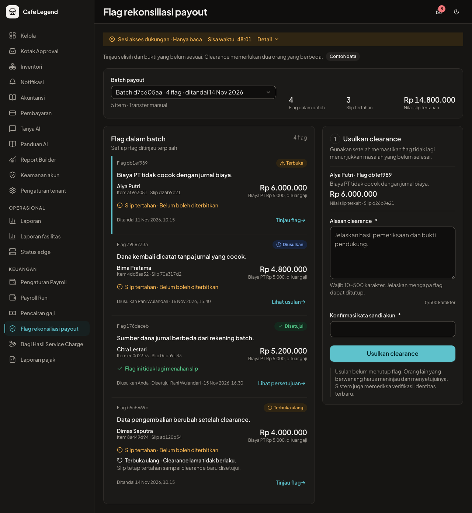

Ini layar yang sudah dibangun, bukan mockup. Isinya sesuai mockup yang disetujui (Q28). Tidak ada tombol bayar di layar ini. Setiap clearance dan penarikan butuh dua orang dan kata sandi. Cukup lihat gambarnya, lalu jawab setuju atau minta diubah.
Daftar flag selisih per batch tampil di layar lebar dan di ponsel. Orang yang mengusulkan wajib mengisi alasan dan kata sandi.


Orang kedua menyetujui dengan kata sandi sendiri. Pengusul dan alasan tampil di panel.

Bila yang membuka panel adalah orang yang mengusulkan, tombol setujui nonaktif dan diberi penjelasan singkat.

Bila data berubah setelah usulan dibuat, usulan lama tidak bisa disetujui. Tim harus membuat usulan baru.

Clearance yang sudah disetujui bisa kembali ditahan bila datanya berubah. Tanda terbuka ulang muncul supaya finance memeriksa ulang.

Setelah disetujui, layar menunjukkan siapa dan kapan dua orang itu bertindak. Ini hanya menutup satu tanda; tidak berarti gaji langsung dibayar.

Penarikan memakai gaya dialog return yang sudah ada. Pengusul mengisi usulan, orang lain menyetujui.


Layar yang sama dalam mode gelap.

Layar ini sudah dibangun dan dilihat dari gambar di atas. Bila memilih Perlu perubahan, tulis di kotak catatan layar mana dan maunya bagaimana.